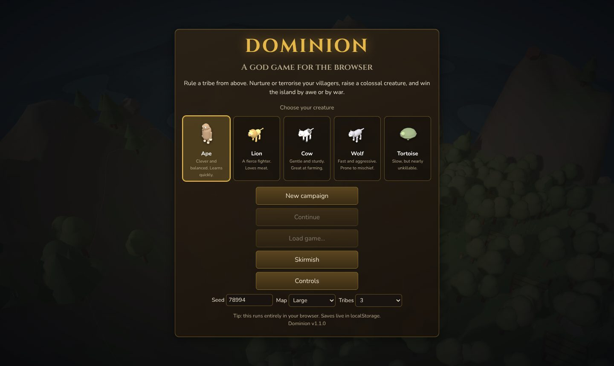
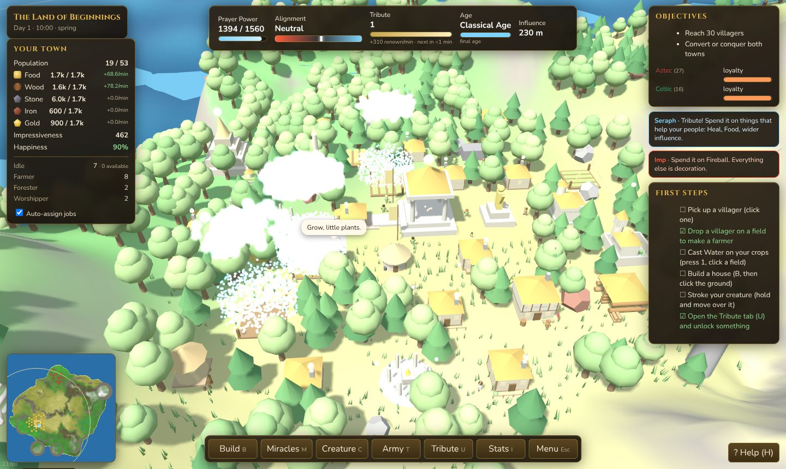
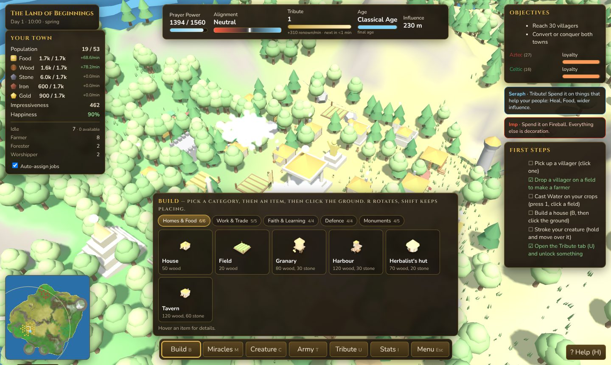
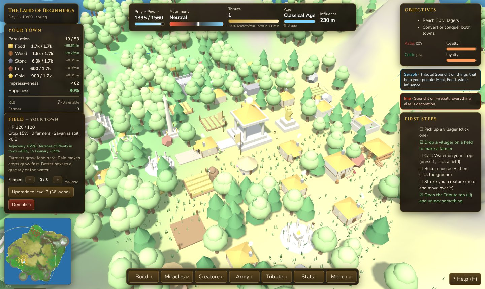
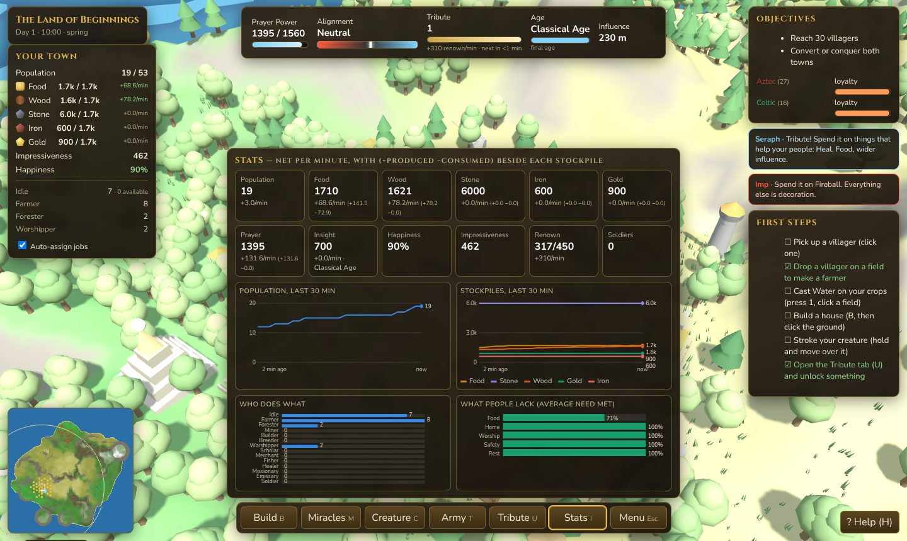

You are a god with a hand and no direct control. Everything below is about nudging a town that is already trying to look after itself.

If people start starving, you have too few fields or too few farmers. Click a field and use the + button to staff it from the idle pool; the number beside it is exactly how many villagers can be assigned right now.

| Action | Input |
|---|---|
| Pan | Left-drag the land (grab and pull), Shift+drag or middle-drag anywhere, WASD / arrows, or push the pointer to the screen edge |
| Rotate and tilt | Right-drag, middle-drag, Ctrl+drag, Q / E |
| Zoom | Mouse wheel, towards the cursor |
| Pick up | Left-click a villager, tree, rock or heap inside your influence |
| Drop or throw | Release. Flick the mouse as you release to throw |
| Reward the creature | Hold the button on it and move — a stroke |
| Punish the creature | A quick tap on it |
| Cast a miracle | 1–9 or the Miracles tab, then click. Hold Shift to keep casting |
| Build | B, pick a building, click the ground. R rotates, Shift keeps placing |
| Walls and roads | Pick them in Build, then drag a line on the ground |
| Cancel | Right-click or Esc |
| Centre on temple / creature | Space / F |
| Tabs | Build, Miracles, Creature, army T, tribUte, stats I, Esc menu |
| Creature orders | K then click an enemy to attack; G then click a spot to guard |
| Hurry a villager | Alt+click them. They work faster for a while, but it frightens them |
| Sacrifice | Alt+drop a villager on your own altar |
| Gesture casting | Alt+drag: circle = Water, V = Heal, zigzag = Fireball, vertical = Lightning, horizontal = Shield |
| Speed and pause | + / −, P |
| Photo mode / help | Y hides the interface · H shows the controls |
Touch works too: one finger pans or grabs, two fingers pinch to zoom and twist to rotate.
Villagers eat, sleep in houses at night, age, fall ill, and get frightened. They are never ordered about directly. You give someone a job by dropping them on the thing that needs doing, or by clicking a building and using its + and − buttons.
Fourteen jobs exist. Farmers, foresters, miners, builders, breeders and worshippers cover the early game. A library adds scholars, a market merchants, a harbour fishers, a herbalist healers, and a monastery missionaries and emissaries.
Auto-assign jobs in the town panel lets the town manage itself. Turn it off when you want full control over who does what.
The "available" count next to the assignment buttons is the exact pool the + button draws from: idle adults and breeders, sleepers included because they get woken. Children, soldiers and anyone away on a mission are never counted.
Every second a villager spends at a job is experience in that job. Six ranks:
NoviceApprentice ~1 min JourneymanExpert ~9 min MasterLegend ~25 min
Each rank is +12% output. A Legend also inspires everyone working at the same building, for a further 25%. The building panel lists the crew with their ranks; the + button picks the most experienced villager available, and − releases the least. Hovering a villager shows their rank and what they are best at, which matters when you are reassigning people.
Building is on a hex grid: one building per tile, with the grid drawn around your cursor while you place. Walls, gates and roads are free-form lines you drag, and roads run under buildings rather than competing for the tile.
Where you put something matters. Like Civilization, what sits on the six neighbouring hexes gives a bonus:
| Building | Likes being next to |
|---|---|
| Field | A granary, or the water. A Terraces of Plenty anywhere in town helps every field. |
| Mine | High ground. |
| Altar | Shrines, statues and wonders. An Obelisk of Dawn in town boosts every altar. |
| House | A market or a tavern — happier residents. |
| Market | Houses and a harbour. |
| Library | An altar, and especially a monastery. |
The building panel shows the bonus you are getting and what would raise it. Buildings also upgrade through three levels: each level fills more of its hex, gains ornaments, and multiplies what it does.


Scholars at a Library produce Insight, and Insight is the only thing that advances the age. The top bar shows which age you are in, the meter, and how many minutes until the next one.
| Age | Insight | Opens |
|---|---|---|
| Stone | 0 | Huts, fields, a lodge, a mine, a first altar, a library |
| Bronze | 90 | Granary, market, harbour, herbalist |
| Iron | 300 | Tavern, monastery, armoury, watchtower, statue |
| Classical | 650 | The Great Pyramid, the Obelisk of Dawn, the Terraces of Plenty |
Each new age is worth two Tribute. Rival tribes advance with time, so a slow start means facing better-equipped neighbours.
Five resources: food, wood, stone, iron and gold. Loose rocks and trees run out, so the mid game is about replacing them with buildings that never do — a Mine beside a vein digs it forever, a Woodcutter's lodge regrows the forest around it, a Harbour brings in food whatever the season, and a Market turns surplus into gold.
Everything is stored in your temple, which holds 600 of each on its own; storehouses and granaries raise the cap. Every stockpile in the town panel carries a live per-minute figure — hover it to see produced and consumed separately. Press I for the full picture.

Worshippers at an altar generate Prayer Power. Nine miracles spend it, from Water at 60 up to a Meteor at 520. You can only cast inside your influence, the ring that grows with your population and how impressive your buildings are.
Miracles pull your alignment one way or the other. Water, Heal, Food, Siren and Shield push you towards benevolence; Fireball, Lightning, Hurricane and Meteor towards malevolence — and so does throwing your own people into the sea. Your temple, your hand and your creature all change appearance to match, and two advisors argue about every decision.
Tribute is the other currency: renown accrues from population, impressiveness and happiness, and every 450 renown is one point. Spend it on new miracles, army types, creature upgrades and divine powers.
You pick one at the start — ape, lion, cow, wolf or tortoise — and it learns by watching. It has opinions about eating trees, eating villagers, gathering wood, watering fields, fighting and sleeping, and each of those is a weight that moves when you react.
With the Creature miracles unlock it will also learn miracles by watching you cast them nearby. It grows as it gains experience, and a large well-fed creature is the single most effective thing you own in a war.
Rival towns have a loyalty bar. Two ways to empty it:
When your influence reaches their town and you are more impressive than they are, loyalty falls. Below 40% their villagers start walking over to you; at zero the whole town converts. Wonders, statues, a big happy population and miracles cast nearby all help.
Unlock the Armoury, train platoons of swordsmen, archers or battering rams, and march them in. Walls and watchtowers hold the line at home. Taking a town by force works, but it costs you alignment and the survivors take a while to believe.
A Monastery opens a third route. Missionaries walk to a rival town and preach: its loyalty drops while they speak and wavering villagers convert on the spot. Emissaries buy favour instead — at 3 the town stops raiding you, at 6 it sends gifts, at 9 it joins you peacefully. Terrorising a town loses the favour you bought.
Each island is generated from a seed: a domain-warped coastline with bays and peninsulas, islets offshore, inland lakes, mountain ridges, and nine biomes from jungle to tundra to volcanic ash. Soil matters — crops grow fastest in jungle and worst in desert and alpine. Deserts hide more gold, badlands more iron.
Seasons turn every two days. Winter slows crops to a crawl and burns wood to keep people warm, so a full store going into it is the difference between a quiet season and a funeral. Storms start fires, droughts wither crops, and rain does your watering for you.
Seven save slots: a quick save on F5 / F9, an autosave every two minutes, and five named slots. Everything lives in your browser's local storage, or the app's own storage on desktop — the two are separate.
Beyond the four-land campaign there is a skirmish mode: pick a seed, a map size up to Colossal, and up to seven rival tribes.